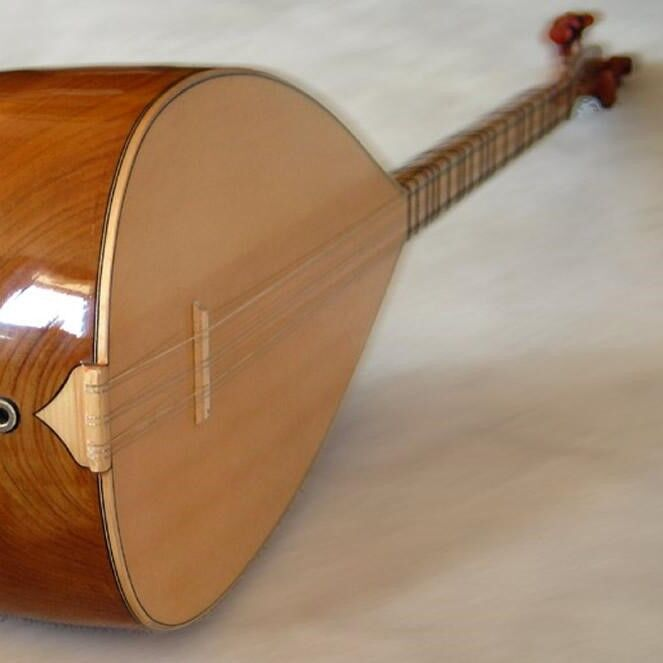

تنبور
تنبور یا تمبور سازی است که دستهای بلند و کاسهای گلابی شکل دارد و معمولاً از چوب توت ساخته میشود. کاسه آن به دو صورت یک تکه (کاسهای) که از قدیم مرسوم بوده و چند تکهای (ترکهای یا چمنی) است که به تقلید از کاسه سه تار در دهههای اخیر ساخته شدهاست. طول این ساز در بین ۷۰ تا ۸۰ سانتیمتر و دارای سه سیم است، یکی واخوان و دو سیم اصلی. در زمان قدیم به گفته فارابی از یک یا دو سیم اصلی استفاده میشدهاست که اکنون به صورت سه سیم معمول است. این ساز دارای چهارده پرده (دستان) و فاقد ربع پرده میباشد. در نواختن آن دو نوع کوک رایج است. ابتدا کوک هفت دستان (برز) و دیگری کوک پنج دستان (ته رز) که نوازندگان امروزی بیشتر از کوک سیم اصلی دو(C) و سیم واخوان سل(G)استفاده میکنند. تنبور را با چهار انگشت دست راست و بدون استفاده از مضراب مصنوعی مینوازند و تکنیکهای دست چپ آن شبیه دیگر سازهای زهی دسته دار مانند تار و سه تار است و مضرابهای اصلی آن عبارتند از انواع مضراب راست، چپ و شُر انواع مضراب ریز، گلریز، غنچه، دوچپ (دوتک) و … آلبوم صدای سخن عشق با صدای شهرام ناظری و آهنگسازی کیخسرو پورناظری اولین و مطرحترین آلبومی است که به معرفی ساز تنبور میپردازد.
تاریخچه تنبور
تنبور یکی از قدیمیترین سازهای ایران است که جنبهٔ عرفانی و مقامی دارد. این ساز از ۱۳ الی ۱۴ پرده تشکیل و ۲ الی ۳ سیم دارد. جنس کاسه و صفحهٔ آن از چوب توت و دستهاش از چوب گردو میباشد. تنبور در مناطق یارساننشین دارای تقدسی خاص است چنانچه نوازندگان قبل از شروع و در خاتمه دستانش را میبوسند. اوج شکوه و عظمت تنبور در قرن پنجم هجری یعنی حضور در سپاه معروف و متشکل از نهصده شاهخوشین بوده و از آن زمان تاکنون در جایجای ایران، تنبور را ساز شاهخوشینی نیز نامیدهاند. از یافتههای باستانشناسان میتوان ادعا کرد که این ساز قدمتی ۶۰۰۰ ساله دارد و از اسناد مهم تاریخی مجسمهای است در حوالی مقبره دانیال نبی (ع) واقع در شوش. شاید نتوان دقیقاً زمان اختراع این ساز را معین نمود، اما میتوان گفت ساخت تنبور از قرنها پیش از ظهور اسلام رواج داشتهاست تنبور کهنترین ساز زهی زخمهای است، به این معنا که اولین سازی میباشد که دستهای بلند به همراه کاسه و وتر داشتهاست. در کتب و رسالات زیادی در این مورد سخن گفتهاند. کتاب دیکشنری گراو که در زمینهسازشناسی میباشد، قدمت این ساز را پنج الی شش هزار سال دانسته و مجسمههای سنگی در موزهها و آثار باستانی به جای مانده در شوش و تپههای بنی یونس در حوالی شهر موصل قدمت این ساز را ۱۵۰۰ الی ۲۰۰۰ سال قبل از میلاد نشان میدهد. در کارنامه اردشیر بابکان یکی از متونهای پهلوی آمده که روزی اردشیر در ستورگاه نشسته بود و تنبور میزد و میسرود. در روایتهای افسانهای آمده که رستم در خوان چهارم تنبور مینواخته و مقام ته رز را به وی و مقام باریه را به باربد موسیقیدان دربار ساسانیان نسبت میدهند. فارابی که در موسیقی الکبیر بهطور گسترده در مورد تنبور و انواع آن و فواصل و کوکهای آن توضیحات مفصل دادهاند. ابن سینا، عبدالقادر مراغی و صفی الدین ارموی نیز از این جملهاند. در آثار شاعران بزرگ فارسیزبان از جمله شیخ جنید بغدادی، فردوسی، مولوی، منوچهری دامغانی، نظامی گنجوی، موسوی، حافظ، وحید قزوینی، بیدل دهلوی و وفا کرمانشاهی به کرات از تنبور سخن به میان آمدهاست.

موسیقی تنبور
در رپرتوار موسیقی تنبور حدود ۷۲ مقام وجود دارد که ۱۶ مقام آنها مربوط به مقامهای مجلسی و ۵۶ مقام نیز مربوط به مقامهای حقانی یا کلام است. پایه و اساس موسیقی تنبور همانند موسیقی کلاسیک ایرانی بدیهه سرایی است. بهطور مثال اگر نوازندهای یک مقام را دو بار در یک روز هم اجرا کند، بهطور یقین یکسان در نمیآید. یکی از خصوصیتهای مقامهای تنبور قابلیت مدگردی آنهاست، یعنی نوازنده عملاً میتواند از یک مقام به دیگر مقامها مدگردی کند و پس از انتقال از چند مقام به مقام اصلی بازگردد.
مقامهای تنبور به سه دسته اصلی تقسیم میشوند:
- مقامهای پردیوری، کلام یا حقانی (مقامهای پردیوری به دو دسته تقسیم میشوند، که یک دسته از آنها مربوط به دورهٔ بعد از سلطان سحاک یا پردیور میشود که بعد از این دوره به وجود آمدهاند و دستهٔ دیگر مقامها مربوط به دروهٔ سلطان سحاک یا دوره پردیور میشود که در این دوره مقدس به وجود آمدهاند که این مقامها دارای تقدس بیشتری هستند)
- مقامهای مجلسی (اسطورهای، باستانی، هوره)
- مقامات مجازی
مقامهای کلام حقانی (دوره سلطان سحاک یا دوره پردیور)
مقامهای کلام حقانی، پردیوری و یاری مهمترین مقامهای تنبور محسوب میشوند و دارای حالت روحانی و تقدس بیشتری نسبت به سایر مقامها هستند. ظاهراً از لحاظ تاریخی قدمت آنها به قرن دهم تا چهاردهم میلادی میرسد و گفته میشود که اولین مقام کلام، به نام شاه خوشینی به زبان فارسی در قرن دهم میلادی سروده شدهاست. مقامات کلام با تنبور و آواز توسط سر کلام و گروه کلام خوان اجرا میشوند و اشعار آن از متون مقدس یارسان و به زبانهای لکی و هورامی یکی از گویشهای زازا-گورانی است. گروهی از مقامهای کلام دارای متر آزادند و حالت دعا و مناجات و عبادت دارند، مانند سید خاموشی و ته رز یاری. گروهی نیز دارای اوزان فراخ و کند هستند و سربند ثابتی دارند، یعنی یک بیت شعر که خاص آن مقام است به صورت ترجیع بند بعد از هر بیت شعر که توسط سر کلام خوانده میشود، توسط گروه کلام خوان همراه کف زدن تکرار میگردد. در بعضی از آنها ریتم تا حدی کند است که فقط سر کلامها و افراد ماهر تر در گروه میتوانند آن را حفظ کنند. این مقامها حالتی عارفانه با سرور و مستی ایجاد میکنند، مانند تنه میری، رژیان دالاهو و بیان اویاری.
گروه سوم مقامهای کلام دارای وزن تندتر هستند که سربند ثابتی نیز دارند و به علت ریتم تندتر، حالت ذکر و سرمستی و سرور ایجاد میکنند. بنا به گفته طاهر یارویسی تا دوره سلطان سحاک، یعنی قرن چهاردهم میلادی، مقامات کلام محفوظ بوده و عمومیت نداشتهاند. از آن پس، ایشان یارانش را فرا میخواند تا همگی از جمله خودش، تمام تجلیات خود در دورانهای مختلف را بیان و کلامهایی را که در هر دوره سرودهاند، دوباره تکرار کنند. بدین ترتیب، مقامهای پردیوری در این برهه از زمان مدون و سینه به سینه از استاد به شاگرد و از پیر به مرید تا به امروز حفظ میشوند.
نام مقامهای کلام به شرح زیر است:
- تهرز یاری
- هی لاوه (دو نمونه)
- چیو وشن یار
- حق حق و هو هو
- سلطان دینه (دو نمونه)
- دسی ویت وله
- بیان او یاری
- حق داوو
- علی علی هو هو
- ای دوس
- شیخ امیری
- لامی و لامی
- علی علی
- یار داوو
- هی گیان
- شاه خوشینی
- ای دیار دیار
- ایمانم یار
- عالی گرزویش
- جم نیان دوسان ئهو یانه
- ای سید محمد
- طاله سوارن
- بلیها
- رژیان دالاهو
- یاران جم نیان
- شاه میو
- یار دیدکانی بنیامین پیره
- تنه میری
- باباناعوثی (قره چوپی)
- باباناعوثی نوع ۱
- باباناعوثی نوع ۲
- بابا جلیلی
- سر خیوی
- پیشروی پردیوری
- خاصه بژنه
- خیاله مسه
- هی ایمان یار
- هاها (دو نمونه)
- خواجه غلامان
- چهل تن چلانان (دو نمونه)
- سید خاموشی
- داوو نه کویره
- حقن حقن
- عابدینه
- یار دیده و کانی هاوشن هاوش
مقامهای مجلسی
مقامهای مجلسی، اسطورهای و باستانی یا هوره مقامات مجلسی شاخهای دیگر از مقامات تنبورند که قدمت آنها به درستی برای ما معلوم نیست، اما بر پایه نقل قولهای شفاهی از قدما، هزارهها از عمر این مقامات میگذرد. این مقامات معمولاً با وزن آزادند، اما گاهی در ابتدا یا در انتها یا در وسط بعضی از آنها، مانند سه رته رز باریه، قه تار و سحری، موسیقی پنج ضربی، ده ضربی، دو ضربی یا هفت ضربی میشود. چون در این مقامات فرمهای آوازی مور و هوره وجود دارد، به آنها مقامات هوره نیز میگویند و به علت قدمت نغمات (و روایتهایی که قدمت این مقامها را گواهی میدهند)، به آنها اسطورهای و باستانی نیز میگویند.
بهطور مثال، مقام باریه را به باربد- موسیقی دان دربار ساسانی- نسبت میدهند و ته رز را به رستم، پهلوان شاهنامه. مقامات مجلسی در مقایسه با مقامهای کلام از تقدس کمتری برخوردارند و میتوان این مقامات را در مجالس عرفانی و محافلی که در خور شان این ساز باشد، اجرا کرد. روایتهای متفاوتی از مقامات مجلسی در مناطق رواج موسیقی تنبور وجود دارد. گاهی تعدادی از مقامهای مجازی و ملودی رقصهای کردی را جزو این مقامها به حساب میآورند و گاهی هم تعدادی از آنها را حذف میکنند یا بداهه نوازیهایشان را مقام مجلسی مینامند.
مقامهای مجلسی منطقه گوران به شرح زیر است:
- سهرتهرز
- غریبی
- ساروخانی
- سحری
- قهتار
- هجرانی
- ته رز روسم
- مجنونی لا و ای لاو
- مجنونی دواله
- باریه
- پاوه موری
- گل و دهره
- گل و خاک
- الون
- بالادستان
- خان احمد خانی.
مقامات مجازی
مقامات مجازی این مقامها بهطور عمده از مقامهای سرنا هستند که توسط دوزله و نرم نای و تنبک و شمشال و کمانچه (یا موکش) و بهطور کلی توسط سازهایی که در مناطق مختلف کردستان رواج دارد، نواخته میشوند. نوازندگان قدیمی که مهارت بیشتری داشته و این مقامات را توسط تنبور مینواختهاند، آنها را به شاگردان خود نیز آموزش میدادند. رفته رفته اکثر نوازندگان آنها را در کنار سایر مقامهای تنبور اجرا کردند، تا اینکه این مقامها به عنوان بخشی از مقامهای تنبور در میان نوازندگان این ساز معرفی شدند.
این مقامها عمدتاً سازی هستند و ریتمهای متنوع تر و تند تری نسبت به سایر مقامها دارند. اگرچه نسبت به دو گروه قبل، از روحانیت کمتری برخوردارند. مقامهای مجازی را میتوان به سه گروه کلی تقسیم کرد. گروه اول مقامهای قدیمی اند، مانند جلوشاهی، سوار سوار و بایه بایه. گروه دوم آنهایی هستند که توسط افراد نیک سرشت و درویش مسلک در یکصد سال گذشته ساخته شدهاند و آنها در جم خانهها و خانقاهها مینوازند و به آهنگهای خانقاهی نیز معروفند. گروه سوم، هر مقام دیگری را گویند که جزو مقامهای اصلی تنبور نباشد. بر این اساس، بعضی از نوازندگان قدیمی تمام مقامها را به دو دسته حقیقی و مجازی تقسیم میکنند.
نام چند مقام مجازی به شرح زیر است:
- جلوشاهی
- جلوشاهی سحری
- بایه بایه
- سوار سوار
- خان امیری
- جنگ را
- سماع